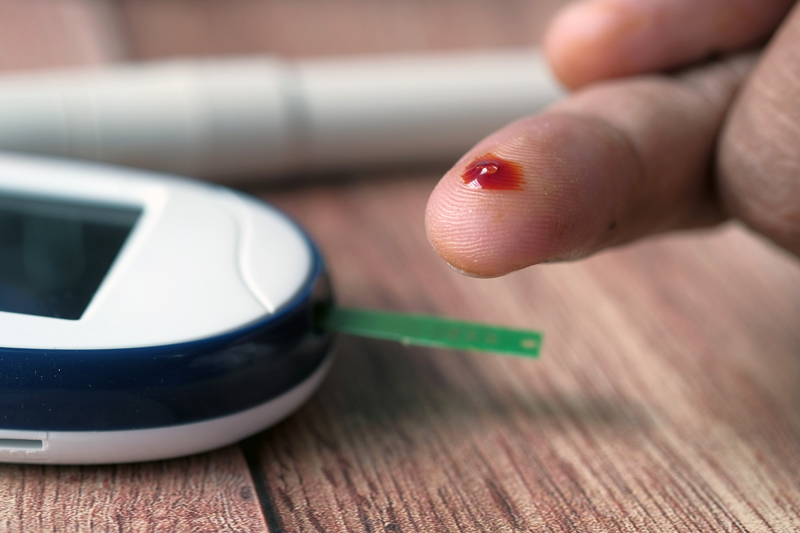
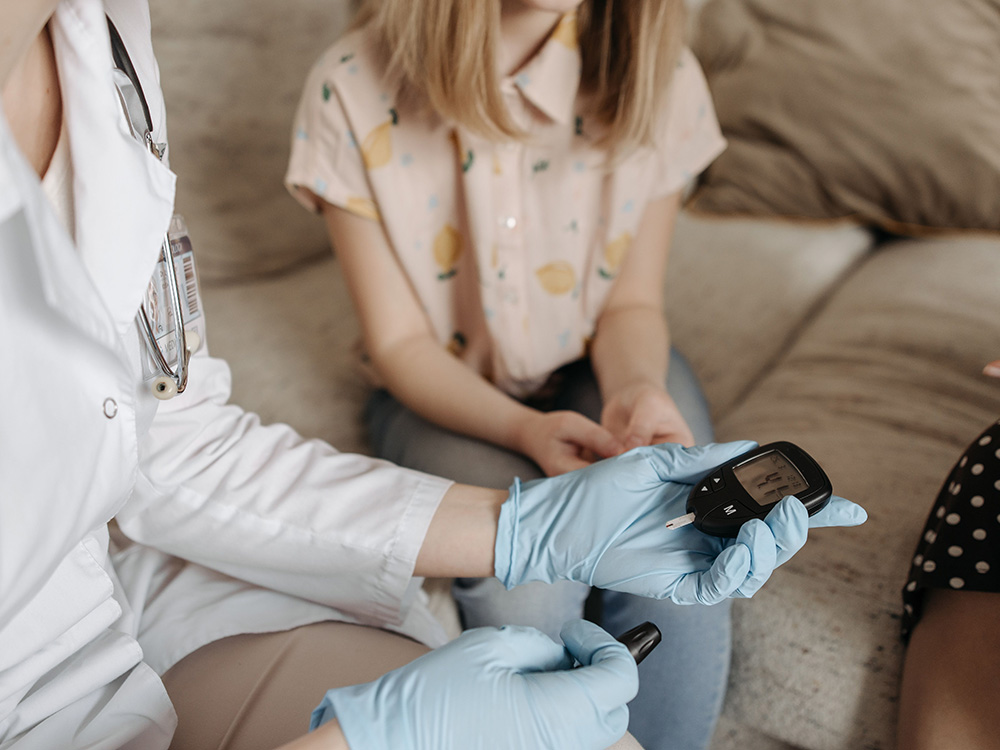

L2-L3 · Flow and Positioned Relationships

A close-up of a finger prick and blood glucose monitor for diabetes testing. Towfiqu Barbhuiya. (3)
Diabetes by the Numbers
- Prevalence: Over 40 million adults in the United States are living with diabetes. That is roughly 12% of the American population. (2)
- Diagnosed: 29.1 million (2)
- Undiagnosed: 11 million (2)
- 65 and older: 28.8% (2)
- New cases: 1.5 million per year in the United States. (2)
- Prediabetes: 115 million adults. (2)
Diabetes in Youth
- About 364,000 of youth under 20 in the United States have been diagnosed with diabetes. (2)
- As of 2022, in children under the age of 18, 21,732 have type 1 diabetes and 14,490 have type 2 diabetes and number is only growing. (2)
Diabetes by Race/Ethnicity
The rates of diagnosed diabetes in adults 2021-2023 (2)
- 15.7% American Indian or Alaskan Native
- 12.2% Black, non-Hispanic
- 11.8% Hispanic, overall
- 9.7% Asian, non-Hispanic
- 7.1% white, non-Hispanic
Diagnosed diabetes among Asian Americans 2019-2021 (2)
- 12.2% Filipino, non-Hispanic
- 10.8% Asian Indian, non-Hispanic
- 7.1% Chinese, non-Hispanic
- 6.8% Japanese, non-Hispanic
- 6.1% Korean, non-Hispanic
- 6.4% Vietnamese, non-Hispanic
- 8.9% other Asian, non-Hispanic
Diabetes among Hispanic adults 2019-2021 (2)
- 13.3% Puerto Rican
- 11.1% Mexican or Mexican American
- 9.4% Dominican
- 9.0% Cuban
- 7.3% Central American
- 5.0% South American
- 7.2% other Hispanic, Latino, or Spanish
Cost of Diabetes
- $412.9 billion: Total cost, United States 2022
- $306.6 billion: Direct medical costs
- $106.3 billion: Indirect costs
Statistics from American Diabetes Association (2)
Replace this with sourced editorial content. Normal flow must remain readable before layered enhancements are applied.
Diabetes was the seventh leading cause of death in the United States based on the 95,190 death certificates in which diabetes was listed as the underlying cause of death. Diabetes was mentioned as an underlying or contributing cause of death in a total of 399,342 certificates. (2)
Screening is Important
The American Diabetes Association recommends that adults aged 35 and older should get checked for type 2 diabetes on a yearly basis. Maintaining a healthy lifestyle can prevent or delay type 2 diabetes and pre-diabetes. Of most importance is maintaining a healthy weight. In a 2023 study, it was discovered that "participants who lost 7 percent of their starting body weight reduced their risk of developing Type 2 diabetes by 60 percent over three years." (4)
Karen Jenner of the News Tribune notes that, "Delays in diabetes care can increase the risk of complications, including heart disease, kidney disease, neuropathy and vision loss. Establishing care with a primary care provider and keeping recommended appointments are important steps in managing overall health." (4)
If you are uninsured or under-insured, getting medical help can be a challenge. Be sure to check with your local health department for assistance through your city, county, or state. If you are uninsured or under-insured, chances are you qualify for your state's medicaid plan which can reduce the cost of health coverage to as much as $0 and no copay.

If you are experiencing barriers to healthy, affordable food, your local government may be able to help. Organizations such as food banks, community centers, and local churches may be able to help.
Add enough content to demonstrate responsive flow, controlled overlap, and content growth.
L4-L5 · Layers, Shapes, and Fallback
Healthy Lifestyle
If you have diabetes or have been recently diagnosed, checking your blood glucose levels often is important. Living with diabetes doesn't have to be life-altering, people with diabetes live happy, healthy, and fulfilling lives. On top of checking your blood sugar regularly, it is vital that you meet with your doctor at least every 3 months and your eye doctor yearly.
For a healthy diet, limit foods that are high in added sugars and other processed ingredients. And ignore those "fad" diets. Instead, eat foods that incorporate healthy fruits and vegetables. Make sure to eat foods containing healthy fats, like avocados, nuts, seeds, and fatty fish as they help to delay sugar absorption. The same goes for those pesky carbs. Stick to complex carbohydrates like brown rice, potatoes and carb-balanced breads and whole grains. (4)
Also important for reducing diabetes risk or complications from diabetes, it is a good idea to get regular physical activity. Karen Renner, of the News Tribune, recommends "starting a walking program, joining an aerobics or yoga class, or using free exercise videos available online.(4)
Use this area to demonstrate editorial wrapping with a progressively enhanced shape. Keep essential text outside the clipped or floated media.
Continue the story until the text passes the float and returns to full measure.